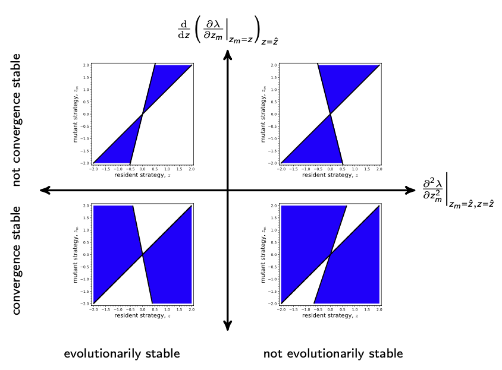

Lecture 16: Evolutionary invasion analysis
Lecture overview
- Background
- Analyzing evolutionary invasion
- Summary and visualization of evolutionary singular strategies
1. Background
In the models we've discussed, we've taken the parameters to be fixed.
In reality, many of these parameters can evolve.
For example, in our model of exponential growth in discrete time [n(t+1)=n(t) R] we took \(R\) to be the same for all individuals for all time.
But clearly any mutation causing a larger \(R\) would increase in frequency, causing the value of \(R\) to increase over time.
In this lecture we'll explore how to determine the direction of evolution and the stability of evolutionary endpoints for more complex models using a technique called evolutionary invasion analysis.
- determine which parameters of our model an evolving trait affects
- take the population to be fixed for some "resident" trait value
- determine the equilibria and stability of the system with only the resident trait
- derive an equation for the growth of a rare "mutant" allele that affects the trait
- ask when the mutant will invade
- look for potential evolutionary endpoints
- determine the stability of those endpoints
2. Analyzing evolutionary invasion
Let's think about this analysis very generally (in discrete time).
Let the number of resident alleles in a population be \(n\) and the number of mutant alleles \(n_m\) (And we'll assume asexual haploids for simplicity.)
Further, let the potentially nonlinear dynamics of these populations depend on their respective trait values, \(z\) and \(z_m\),
The Jacobian is
Now consider some non-zero resident equilibrium, \(\hat{n}>0\), without the mutant, \(\hat n_{m=0}\).
Assuming that the resident does not produce mutants continually, \(\frac{\mathrm{d}n_m(t+1)}{\mathrm{d}n(t)}\big\vert_{n_m=0}=0\), the Jacobian evaluated at this equilibrium simplifies
We can immediately see the two eigenvalues of this upper triangular matrix
The first, \(\lambda_1\), determines whether the resident equilibrium, \(\hat{n}>0\), is stable in the absence of mutants.
We'll take \(0< \lambda_1 < 1\) as given.
The second, \(\lambda_2\), determines whether the resident equilibrium is stable in the presence of a small number of mutants.
We call \(\lambda_2\) the invasion fitness, \(\lambda(z_m,z)\).
In particular, the mutant will invade whenever \(\lambda(z_m,z) > 1\).
(Note that in some cases, like in the example from last week about the evolution of dispersal, we can derive \(\lambda(z_m,z)\) from a description of the model without doing the formal stability analysis outlined above.)
In some simple cases we might be able to use the invasion criterium, \(\lambda(z_m,z)>1\), to determine what values of \(z_m\) (relative to \(z\)) can invade.
For example, in the evolution of dispersal example, we could prove that \(\lambda(z_m,z)>1\) if and only if the mutant dispersal rate, \(d_m=d(z_m)\), was between the resident dispersal rate \(d = d(z)\) and \(1 - c d\) (see plots below).
import sympy
import numpy as np
# Initialize symbols
dm, d, c = sympy.symbols('dm, d, c')
# Specifiy evolution of dispersal model
w = (1-dm) / ((1-dm) + d*(1-c)) + dm*(1-c)/((1-d) + d*(1-c))
# Set constants
d1, c1 = 1/4, 1/3
d2, c2 = 9/10, 1/3
# Build plots
p1 = sympy.plot(
w.subs({'d': d1, 'c': c1}), (dm, 0, 1),
xlabel=r'$d_m$', ylabel=r'$\lambda(d_m,d)$', size=(9,4),
show=False, ylim=(0.8, 1.2), label=f"d = {d1}, c = {np.round(c1,2)}", legend=True
)
p2 = sympy.plot(
w.subs({'d': d2, 'c': c2}), (dm, 0, 1),
xlabel=r'$d_m$', ylabel=r'$\lambda(d_m,d)$',
show=False, ylim=(0.8, 1.2), label=f"d = {d2}, c = {np.round(c2,2)}", legend=True
)
# Add scatter where intersection occurs
solutions = sympy.solve(sympy.Eq(w, 1), dm)
print(f"Both plots intersect y=1 at {solutions}")
# Overlay p2 onto p1 and display plot
p1.append(p2[0])
p1.show()
In most cases, however, \(\lambda(z_m,z)\) will be complex enough that this will not be possible, so we rely on a simple approximation.
When the mutant trait value is very close to the resident trait value, we can use a first order Taylor series approximation around \(z_m = z\)
This allows us to determine which direction evolution will proceed:
- \(\frac{\partial \lambda}{\partial z_m}\Big\vert_{z_m=z}>0 \implies\) invasion, \(\lambda(z_m,z)>1\), when \(z_m>z\)
- \(\frac{\partial \lambda}{\partial z_m}\Big\vert_{z_m=z}<0 \implies\) invasion, \(\lambda(z_m,z)>1\), when \(z_{m} < z\)
We can go back and modify the plot we made above for the evolution of dispersal to see what way evolution will proceed.
import sympy
import numpy as np
import matplotlib.pyplot as plt
# Initialize symbols
dm, d, c = sympy.symbols('dm, d, c')
# Specifiy evolution of dispersal model
w = (1-dm) / ((1-dm) + d*(1-c)) + dm*(1-c)/((1-d) + d*(1-c))
# Set constants
d1, c1 = 1/4, 1/3
d2, c2 = 9/10, 1/3
# Compute the derivative at the point when resident and mutant trait values are the same
s1 = float(sympy.diff(w, dm).subs({'d': d1, 'c': c1, 'dm': d1}))
s2 = float(sympy.diff(w, dm).subs({'d': d2, 'c': c2, 'dm': d2}))
# Let's make a pythonic function to make plotting a bit more expressive
fw1 = sympy.lambdify(dm, w.subs({'d': d1, 'c': c1}))
fw2 = sympy.lambdify(dm, w.subs({'d': d2, 'c': c2}))
xdm = np.linspace(0, 1, 50)
# Initialize plots
fig, ax = plt.subplots(1,2, figsize=(9,3))
# Plot the curves
ax[0].plot(xdm, fw1(xdm), label=f"d = {d1}, c = {np.round(c1,2)}")
ax[1].plot(xdm, fw2(xdm), label=f"d = {d2}, c = {np.round(c2,2)}")
# Add the tangent lines showing the slope
ax[0].plot(
np.linspace(d1-0.1, d1+0.1, 10),
np.linspace(1-(s1*0.1), 1+(s1*0.1), 10),
color='red',
label=r'$\delta \lambda / \delta z_m}$'
)
ax[1].plot(
np.linspace(d2-0.1, d2+0.1, 10),
np.linspace(1-(s2*0.1), 1+(s2*0.1), 10),
color='red',
label=r'$\delta \lambda / \delta z_m}$'
)
# What way does evolution proceed?
ax[0].arrow(x=d1-0.05, y=1.1, dx=np.sign((1 - c1*d1)-d1)*0.1, dy=0, width=.01, color='green')
ax[1].arrow(x=d2-0.05, y=1.1, dx=np.sign((1 - c2*d2)-d2)*0.1, dy=0, width=.01, color='green')
# Add intersect annotations
ax[0].annotate(r'$d$', xy=(d1, 0.97))
ax[0].annotate(r'$1-cd$', xy=(1-c1*d1 - 0.05, 0.97))
ax[0].scatter(d1, 1)
ax[0].scatter(1-c1*d1, 1)
ax[1].annotate(r'$d$', xy=(d2, 0.97))
ax[1].annotate(r'$1-cd$', xy=(1-c2*d2 - 0.05, 0.97))
ax[1].scatter(d2, 1)
ax[1].scatter(1-c2*d2, 1)
# Modify title and range of axes and add legend
for i in range(2):
ax[i].axhline(1, linestyle='dotted', color='black')
ax[i].set_xlabel(r'$d_m$')
ax[i].set_ylabel(r'$\lambda(d_m,d)$')
ax[i].set_ylim(0.8, 1.2)
ax[i].legend(frameon=False)
# Display plot
fig.tight_layout()
plt.show()
The direction of evolution by small steps is given by \(\frac{\partial \lambda}{\partial z_m}\Big\vert_{z_m=z}\), the selection gradient.
Potential evolutionary endpoints, also called evolutionarily singular strategies, are the resident trait values \(z=\hat{z}\) where there is no directional selection
In the evolution of dispersal example, we found \(\hat{d} = \frac{1}{1+c}\)
import sympy
import numpy as np
import matplotlib.pyplot as plt
# Initialize symbols
dm, d, c = sympy.symbols('dm, d, c')
# Specifiy evolution of dispersal model
w = (1-dm) / ((1-dm) + d*(1-c)) + dm*(1-c)/((1-d) + d*(1-c))
# Set constants
c3 = 1/3
d3 = 1/(1+c3)
# Compute the derivative at the point when resident and mutant trait values are the same
s3 = float(sympy.diff(w, dm).subs({'d': d3, 'c': c3, 'dm': d3}))
# Let's make a pythonic function to make plotting a bit more expressive
fw3 = sympy.lambdify(dm, w.subs({'d': d3, 'c': c3}))
xdm = np.linspace(0, 1, 50)
# Initialize plots
fig, ax = plt.subplots(figsize=(4.5,3))
# Plot the curves
ax.plot(xdm, fw3(xdm), label=f"d = {d3}, c = {np.round(c3,2)}")
# Add the tangent lines showing the slope
ax.plot(
np.linspace(d3-0.1, d3+0.1, 10),
np.linspace(1-(s3*0.1), 1+(s3*0.1), 10),
color='red',
label=r'$\delta \lambda / \delta z_m}$'
)
# What way does evolution proceed?
ax.arrow(x=d3, y=1.1, dx=np.sign((1 - c3*d3)-d3)*0.1, dy=0, width=.01, color='green')
# Add intersect annotations
#ax.annotate(text=r'$d$', xy=(d3, 0.97))
ax.annotate(r'$d = 1-cd$', xy=(1-c3*d3 - 0.11, 0.95))
ax.scatter(d3, 1)
ax.scatter(1-c3*d3, 1)
# Modify title and range of axes and add legend
ax.axhline(1, linestyle='dotted', color='black')
ax.set_xlabel(r'$d_m$')
ax.set_ylabel(r'$\lambda(d_m,d)$')
ax.set_ylim(0.8, 1.2)
ax.legend(frameon=False)
# Display plot
fig.tight_layout()
plt.show()
An evolutionarily singular strategy, \(\hat{z}\), will only be an evolutionarily stable strategy (ESS), \(z^{\star}\), if it cannot be invaded.
In the evolution of dispersal example, we could show that \(\hat{d} = \frac{1}{1+c}\) was globally stable because \(\lambda(d_m,d)\vert_{d=\hat{d}}<1\) for all \(d_m\).
Global stability will be impossible to prove for more complex models, and so we often focus on local stability, which requires that \(\lambda(z_m,z)\vert_{z=\hat{z}}\) is concave at \(z_m=\hat{z}\)
To summarize, an evolutionarily stable strategy, \(z^{\star}\), satisfies both
i.e., \(z^{\star}\) is a (local) fitness maximum.
There is one more characteristic of evolutionarily singular strategies that we care about, and that is whether evolution actually leads to that strategy or not.
For evolution to move the trait value towards a singular strategy, \(\hat{z}\), we need evolution to increase the trait value when it is less than \(\hat{z}\) and decrease the trait value when it is greater than \(\hat{z}\).
In other words, we need the selection gradient \(\frac{\partial \lambda}{\partial z_m}\Big\vert_{z_m=z}\) to decrease as we move through \(z=\hat{z}\)
Singular strategies that satisfy this criteria are called convergence stable.
Interestingly, not all evolutionarily stable strategies are convergence stable and not all convergence stable singular strategies are evolutionarily stable!
Evolutionarily stable strategies that are not convergence stable are called Garden of Eden strategies.
Singular strategies that are convergence stable but not evolutionarily stable are called evolutionary branching points.
The latter are of particular interest because the system evolves towards a state where multiple strategies can coexist, leading to diversification.
In tutorial we'll see an example of an evolutionary branching point.
3. Summary and visualization of evolutionary singulary strategies
There are four types of evolutionarily singular strategies \(\hat{z}\), where \(\frac{\partial \lambda}{\partial z_m}\Big\vert_{z_m=\hat{z},z=\hat{z}}=0\)

A helpful way to visualize the two types of stability at an evolutionarily singular strategy is called a pairwise invasibility plot (PIP)
from sympy import exp
from matplotlib.colors import ListedColormap
# Initialize symbols
sm, s, r, va, vk, km, so, x = sympy.symbols('sm,s,r,va,vk,km,so,x')
# Initialize model
a = exp(-(sm-s)**2/va)
k = km * exp(-(s-so)**2/vk)
w = 1 + r - r * a * k.subs({'s': s}) / k.subs({'s': sm})
w0 = w.subs({'r':1.1, 'vk': 1, 'va': 1.5, 'so': 0}) #invasion fitness function
# Solve for w0 == 1
sol = sympy.solve(sympy.Eq(w0, 1), s)
fs = [sympy.lambdify(sm, j) for j in sol]
# Make the sympy model into python function
fw = sympy.lambdify((s, sm), w0)
# Plotting parameters
ymin, ymax, dz = -2, 2, 0.1
z = np.linspace(ymin, ymax, 200)
fig, ax = plt.subplots()
# Binary invasion mask
invasion = np.array([[[fw(s, sm) for s in z] for sm in z]])[0]
cmap = ListedColormap(['white', 'blue'])
ax.contourf(z, z, invasion > 1, cmap=cmap)
# Add plots at w0 == 1
for f in fs:
ax.plot(f(z), z, color='black', linewidth=3)
# Add scatter point over intersection of w0 == 1 solutions
ax.scatter(
sympy.solve(sympy.Eq(sol[1], sol[0])),
sympy.solve(sympy.Eq(sol[0], sol[1])),
color='red', s = 200, zorder=10
)
# Add labels and specify ranges
ax.set_xlim(ymin, ymax)
ax.set_ylim(ymin, ymax)
ax.set_xlabel('resident strategy, $z$')
ax.set_ylabel('mutant strategy, $z_m$')
plt.show()
Above, in the pairwise invasibility plot (PIP), we colour in the mutant strategies that can invade a given resident strategy. This allows us to see which singular strategies are convergence stable. And whether a singular strategy is evolutionarily stable as well.
Below, we summarize all of the evolutionary stable strategies in context with the corresponding PIP.
